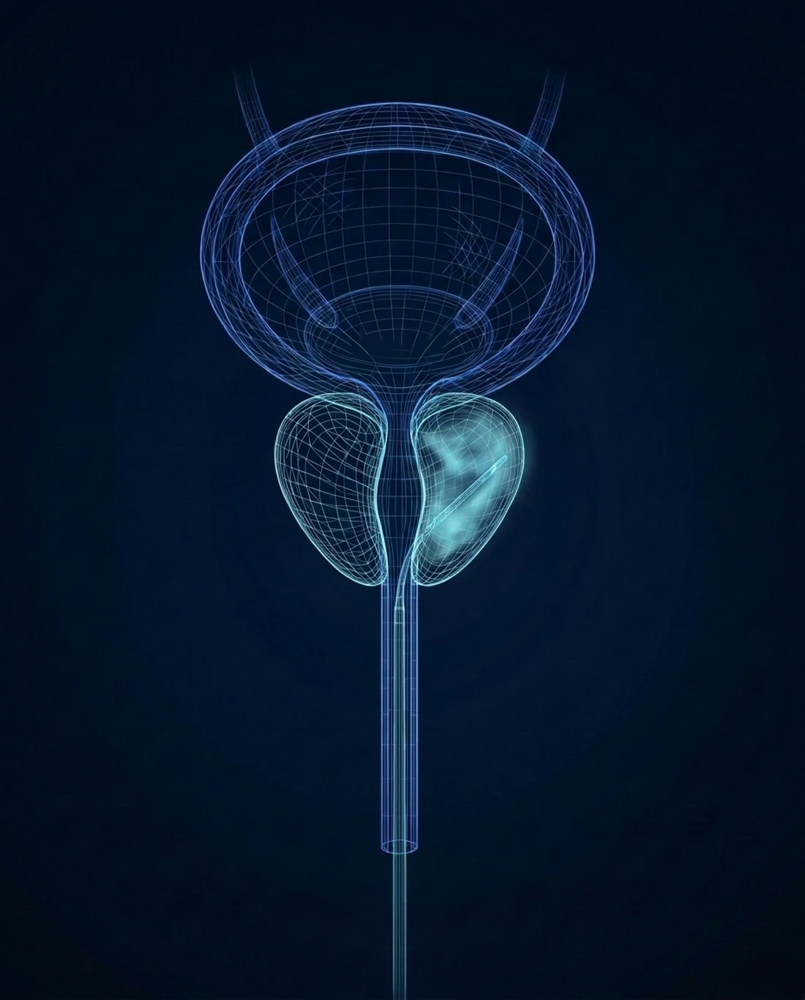

An enlarged prostate,
treated with steam
Rezūm uses the stored energy in a few drops of water, released as vapor, to shrink the excess prostate tissue pressing on the urethra. A brief in-office treatment, no implants left behind, with relief that builds over the following months.

How Rezūm works
Rezūm harnesses the thermal energy stored in a few drops of water. Released as vapor directly into the prostate, that energy treats the excess tissue squeezing the urethra. The treatment itself takes only minutes and is done right in the office.
There are no implants and nothing permanent is left behind. Over the weeks that follow, your body naturally reabsorbs the treated tissue, the prostate shrinks, and urinary symptoms improve steadily over three to six months, with durable relief shown at five years.
Evaluation
We review your symptoms and prostate anatomy to confirm Rezūm is a good fit for you.
Preparation
Local anesthesia and light sedation are given. The treatment is done in the office or a procedure suite.
Steam delivery
A small device releases brief, 9-second bursts of water vapor into the obstructing tissue.
Natural healing
Your body reabsorbs the treated tissue, the prostate shrinks, and symptoms ease over three to six months.
Why men choose Rezūm
One short office visit
Typically completed in under 30 minutes, with no hospital stay. Most men go home the same day.
Nothing left behind
There are no implants. Your body simply reabsorbs the treated tissue over the weeks and months that follow.
Durable 5-year results
Clinical data shows sustained relief at five years, with most men needing no further treatment.
Works for larger prostates
Effective across a wide range of sizes, including men with a prominent median lobe.
See if Rezūm is right for you
Same-day and next-day appointments. Rezūm is typically covered by Medicare and most commercial plans, with telehealth consultations available. For the fastest response, send the office a secure message; the reply comes back by text.
Chief of Urology, Providence St. Joseph Hospital · UroLift Center of Excellence · Orange County's highest-volume Aquablation surgeon